jsp&el&jstl
第1章 jsp入门
1.1 jsp简介
1.1.1 jsp的概念
HTML代码与Java代码共同存在，其中，HTML代码用来实现网页中静态内容的显示，Java代码用来实现网页中动态内容的显示。为了与传统HTML有所区别，JSP文件的扩展名为.jsp。
JSP技术所开发的Web应用程序是基于Java的，本质上就是一个Servlet , 它可以用一种简捷而快速的方法从Java程序生成Web页面，其使用上具有如下几点特征：
- 跨平台：由于JSP是基于Java语言的，它可以使用Java API，所以它也是跨平台的，可以应用于不同的系统中，如Windows、Linux等。当从一个平台移植到另一个平台时，JSP和JavaBean的代码并不需要重新编译，这是因为Java的字节码是与平台无关的，这也应验了Java语言“一次编译，到处运行”的特点
- 业务代码相分离：在使用JSP技术开发Web应用时，可以将界面的开发与应用程序的开发分离开。开发人员使用HTML来设计界面，使用JSP标签和脚本来动态生成页面上的内容。在服务器端，JSP引擎（或容器，本书中指Tomcat）负责解析JSP标签和脚本程序，生成所请求的内容，并将执行结果以HTML页面的形式返回到浏览器。
- 组件重用：JSP中可以使用JavaBean编写业务组件，也就是使用一个JavaBean类封装业务处理代码或者作为一个数据存储模型，在JSP页面中，甚至在整个项目中，都可以重复使用这个JavaBean，同时，JavaBean也可以应用到其他Java应用程序中。
- 预编译：预编译就是在用户第一次通过浏览器访问JSP页面时，服务器将对JSP页面代码进行编译，并且仅执行一次编译。编译好的代码将被保存，在用户下一次访问时，会直接执行编译好的代码。这样不仅节约了服务器的CPU资源，还大大的提升了客户端的访问速度。
1.1.2 为什么要诞生JSP
我们先来设计一个场景，完成一个需求：往页面输出一个表格.
要实现此需求,我们就需要在servlet中使用response对象，向页面输出内容，需要拼接html标签，这个操作十分麻烦。
因此我们需要一个解决方案，那么这个解决方案应该满足什么条件呢？
应该有以下两点：
1 必须不再拼接html，使用字符串向页面输出代码
2 需要保留servlet可以通过代码，动态生成网页的功能
满足这两点的正式我们要学习的JSP技术：它可以简化html书写，同时动态生成页面。
1.1.3 jsp初体验
1.1.3.1 创建jsp文件

1.1.3.2 编写jsp代码
测试jsp
<% date date(); simpledateformat dateformat="new" simpledateformat("yyyy-mm-dd hh:mm:dd"); string curtime="dateFormat.format(date);" request.setattribute("curtime",curtime); %>
当前系统时间：<%=request.getattribute("curtime") %>
1.1.3.3 访问jsp
在地址栏输入jsp文件名称访问即可。
效果：

1.2 jsp的执行流程
通过上面的jsp初体验, 我们看到jsp中既可以编写java代码也可以直接编写html代码，相对servlet更加方便，为啥jsp中可以直接使用request对象呢 ? 接下来我们来看下它的执行流程
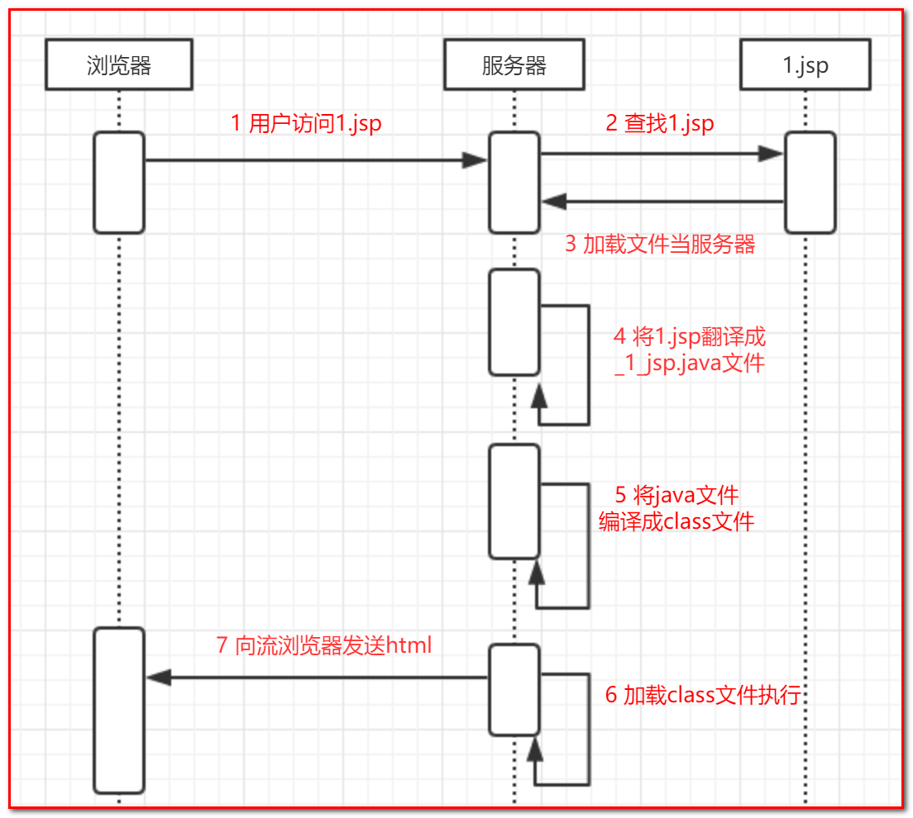
依据上图的流程，在本地找到了生成的java文件，其中一部分内容如下图：
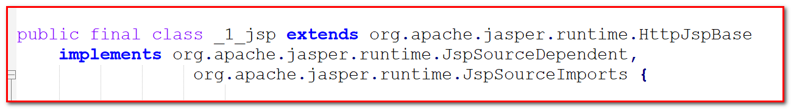
我们可以看到当前的jsp文件被翻译成了一个类，这个类继承HttpJspBase类，那么这个HttpJspBase类又是什么？
注意jsp的翻译有服务器完成，HttpJspBase类一定也是tomcat服务器的内容，顺着org.apache.jasper.runtime.HttpJspBase这个类全名，我们找到这个类的源码：
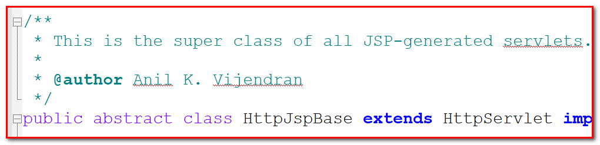
通过观察源码，我们发现JSP其实底层就是一个servlet。通过观察源码，我们发现我们刚刚编写的所有代码都在该Servlet里面的service方法内部。
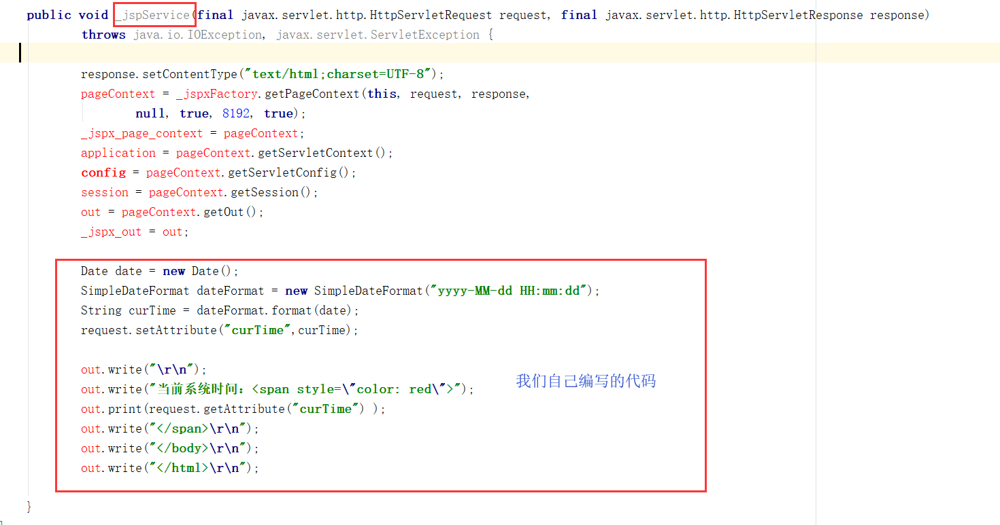
总结：
1. jsp之所以可以编写html代码，其实本质上也是类似我们使用Servlet直接输出的。
2. jsp之所以能够直接使用request对象，是因为我们自己编写的代码全部都落入到了service方法内部，在service方法内部一开始就已经声明了request,response,session,application(ServletContext)等对象了,这些对象成为之jsp内置对象。
1.3 jsp的基本语法
1.3.1 jsp注释
1.3.1.1 JSP注释格式
<%– jsp注释 –%>
1.3.1.2 JSP注释的使用
jsp文件：
<%@ page contentType="text/html;charset=UTF-8" language="java" %>
<html>
<head>
<title>注释</title>
</head>
<body>
<!---这个是html注释-->
<%-- 这个是jsp的注释--%>
</body>
</html>访问页面测试：没有任何内容显示，那么也就说html与jsp注释都生效, 但是点击查看源码的时候我们发现我们只能查看到html的注释，jsp的注释根本就看不到。
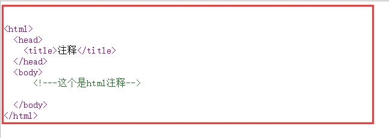
总结
jsp的注释不会显示在源码上，更加安全 , 所以在jsp页面中推荐使用jsp的注释。
1.3.2 jsp书写java代码的三种方式
在之前的演示中，我的jsp已经可以向页面输出一个html内容，但是这个还不够，jsp应该还要有像servlet一样可以通过代码，动态生成网页的功能。servlet是使用java代码生成动态网页的，因此，接下来，我们要学习如何在jsp页面使用java代码。
1.3.2.1 脚本片段
1.3.2.1.1 脚本片段格式
格式：<% Java代码片段 %>
jsp文件内容：
<%@ page contenttype="text/html;charset=UTF-8" language="java" %>
书写java代码的三种方式
<%-- 脚本片段 --%>
<% int x="10;" %>
翻译成java文件： 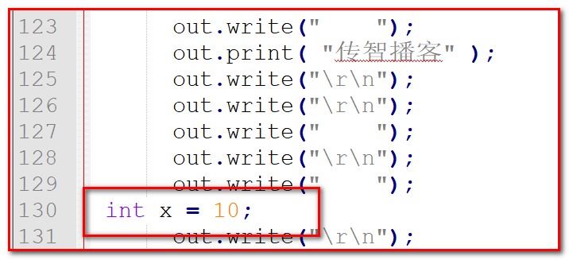
1.3.2.1.2 脚本片段作用
在jsp翻译后的_jspService方法中，嵌入java代码1.3.2.1.3 脚本片段使用注意事项
脚本片段可以分开书写，最终是组合在一起的，示例：
脚本片段内容：
<% 5 for(int j="0" ; < ;j++){%>
Hello World!!!
<%}%>< code><> 效果：
Hello World!!!
Hello World!!!
Hello World!!!
Hello World!!!
Hello World!!! java源码:

1.3.2.2 脚本声明
1.3.2.2.1 脚本声明格式
格式：<%! 书写Java代码 %>
jsp文件内容：
<%@ page contenttype="text/html;charset=UTF-8" language="java" %>
书写java代码的三种方式
<%! int i="0" ;%>
翻译成java文件： 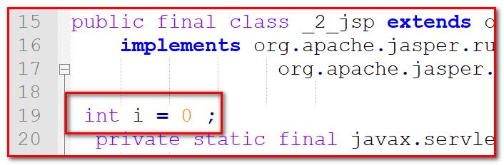
总结：脚本声明书写的java代码会翻译在类的成员位置上。1.3.2.2.2 脚本声明作用
在类的成员位置上声明方法和变量
1.3.2.3 脚本表达式
1.3.2.3.1 脚本表达式格式
格式：<%= 表达式 %>
jsp文件内容：
<%@ page contenttype="text/html;charset=UTF-8" language="java" %>
书写java代码的三种方式
<%-- 脚本表达式 --%>
<%= "传智播客" %>
翻译成java文件：在_jspService方法中，找到了我们书写的内容
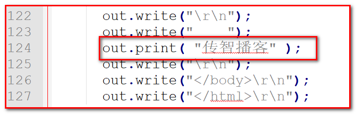
上图的中的out对象是什么？
答：out对象的类型是JspWriter，通过查阅JAVAEE文档发现其父类是java.io.Writer，是一个Writer 字符流。
页面输出：
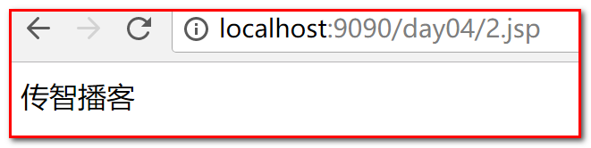
总结：脚本表达式书写的java代码，会翻译到java文件中的_jspService方法内，被out.print输出到页面。1.3.2.3.2 脚本表达式作用
代替response向页面输出内容第2章 EL表达式
2.1 EL表达式的基本概述
想要知道什么是EL表达式，它为了解决什么问题而诞生，我们先通过一个场景来了解一下：
现在有一个需求：在jsp使用java代码在request中设置四个数据（10 20 30 40 ）的向页面输出（10+20+（30-40））计算结果，以我们现在的技术去实现会是这样实现：
<%@ page contenttype="text/html;charset=UTF-8" language="java" %>
Title
<%-- 20 30 40 在jsp设置(request)四个数据（10 ）的向页面输出（10+20+（30-40））计算结果 --%>
<% request.setattribute("num1", 10); request.setattribute("num2", 20); request.setattribute("num3", 30); request.setattribute("num4", 40); %>
java代码输出：<%= (integer)request.getattribute("num1") + (integer)request.getattribute("num2") ( (integer)request.getattribute("num3") - (integer)request.getattribute("num4"))%>
从上面的代码中我们发现，使用之前的脚本片段来完成实在太过复杂和繁琐，一个简单的算术计算不应该如此艰难的完成。
因此我们需要一个新的技术，来简化java代码的一些操作，这个就是我们需要学习的EL表达式技术。
EL全称：Expression Language
作用：代替jsp中脚本表达式的功能，简化对java代码的操作。
2.2 EL表达式的格式和作用
- EL表达式的格式：${表达式内容}
- EL表达式的作用： 主要是从域对象中查找指定的数据。
2.3 EL表达式的基本使用
2.3.1 EL获得容器（域对象）的数据
再上面的案例中，我们使用原来的方式获取数据十分麻烦，接下来我们使用EL表达式的方式完成上面的需求：
jsp演示代码：
<%@ page contenttype="text/html;charset=UTF-8" language="java" %>
Title
<%-- 20 30 40 在jsp设置(request)四个数据（10 ）的向页面输出（10+20+（30-40））计算结果 --%>
<% request.setattribute("num1", 10); request.setattribute("num2", 20); request.setattribute("num3", 30); request.setattribute("num4", 40); %>
使用EL表达式输出：${num1 + num2 + (num3 - num4)}
显而易见的使用EL表达式我们获取数字，并执行运算都方便了许多。在上面这个案例中我们是从request中获取数据，那么我们可以获取其他域对象(容器)中的数据吗？我们来测试一下：
<%@ page contenttype="text/html;charset=UTF-8" language="java" %>
Title
<%-- 在三个域对象中存入同名的数据（request、session、servletcontext） 然后再使用el表达式获取。 --%>
<% request.setattribute("addr","上海"); request.getsession().setattribute("addr","北京"); session.setattribute("addr","北京"); request.getsession().getservletcontext().setattribute("addr","广州"); application.setattribute("addr","广州"); %>
${addr}
测试的结果出来后，我们会发现，获取出来的是——上海。设置三个容器的数据都是同名数据，这造成了我们获取数据的时候，单单使用名称已经无法区分所以数据，那么怎么解决这个问题呢？如何才能从指定的容器中获取数据呢？
我们需要在获取数据的时候指定相关的容器：
<%@ page contenttype="text/html;charset=UTF-8" language="java" %>
Title
<%-- 在三个容器中存入数据（request、session、servletcontext） 然后再使用el表达式获取。 --%>
<% request.setattribute("addr","上海"); request.getsession().setattribute("addr","北京"); session.setattribute("addr","北京"); request.getsession().getservletcontext().setattribute("addr","广州"); application.setattribute("addr","广州"); %>
指定从request容器获取数据：${requestScope.addr}
指定从session容器获取数据：${sessionScope.addr}
指定从servletcontext容器获取数据：${applicationScope.addr}
那么我们之前没有指定容器是如何获取数据的呢？其实${addr}在获取容器的时候，默认按request、session、servletcontext顺序从获取数据，只要获取到就不再往下找了，所以上一个案例一直获取到是上海。
2.3.2 EL获取和解析复杂数据
上面的案例我们在获取数据的时候，都是简单的字符串，接下来我们来获取一些复杂数据，复杂数据特指：数组，集合（List Map）和JavaBean。
2.3.2.1 获取数组
servlet代码：
package cn.itcast.web;
import cn.itcast.domain.Person;
import javax.servlet.ServletException;
import javax.servlet.annotation.WebServlet;
import javax.servlet.http.HttpServlet;
import javax.servlet.http.HttpServletRequest;
import javax.servlet.http.HttpServletResponse;
import java.io.IOException;
//urlPatterns = "/el1"
public class ELServlet1 extends HttpServlet {
protected void doPost(HttpServletRequest request, HttpServletResponse response) throws ServletException, IOException {
doGet(request, response);
}
protected void doGet(HttpServletRequest request, HttpServletResponse response) throws ServletException, IOException {
//准备需要解析的数据
//数组
int[] arr = {11,22,33,44,55};
request.setAttribute("arr",arr);
request.getRequestDispatcher("/4.jsp").forward(request,response);
}
}jsp代码：
<%@ page contenttype="text/html;charset=UTF-8" language="java" %>
Title
<%--获取数组数据--%>
${arr[4]}
2.3.2.2 获取数组注意事项
获取数组中某一数据，使用中括号添加角标即可
2.3.2.3 获取集合（list map）
servlet准备数据：
package cn.itcast.web;
import cn.itcast.domain.Person;
import javax.servlet.ServletException;
import javax.servlet.annotation.WebServlet;
import javax.servlet.http.HttpServlet;
import javax.servlet.http.HttpServletRequest;
import javax.servlet.http.HttpServletResponse;
import java.io.IOException;
import java.util.ArrayList;
import java.util.HashMap;
import java.util.List;
import java.util.Map;
//urlPatterns = "/el2"
public class ELServlet2 extends HttpServlet {
protected void doPost(HttpServletRequest request, HttpServletResponse response) throws ServletException, IOException {
doGet(request, response);
}
protected void doGet(HttpServletRequest request, HttpServletResponse response) throws ServletException, IOException {
//准备需要解析的数据
//list集合
List list = new ArrayList();
list.add("北京传智播客");
list.add("上海传智播客");
list.add("广州传智播客");
request.setAttribute("list",list);
//map集合
Map map = new HashMap();
map.put("language1", "java");
map.put("language2", "go");
map.put("language3", "c#");
map.put("aa.bb.cc", "python");
request.setAttribute("map",map);
request.getRequestDispatcher("/5.jsp").forward(request,response);
}
}
jsp代码：
<%@ page contenttype="text/html;charset=UTF-8" language="java" %>
Title
<%--获取list集合数据--%>
获取list集合：${list}
获取list集合某一个数据：${list[0]}
获取map集合：${map}
获取map集合某一数据：${map.language1}
获取map集合特殊key数据：${map["aa.bb.cc"]}
2.3.2.4 获取集合注意事项
- 设置map集合数据的key，尽量不要出现”.“
- 凡是在EL表达式中使用”.“可以获取的数据，使用”[]”也可以获取
2.3.2.5 获取JavaBean数据
package cn.itcast.web;
import cn.itcast.domain.Person;
import javax.servlet.ServletException;
import javax.servlet.annotation.WebServlet;
import javax.servlet.http.HttpServlet;
import javax.servlet.http.HttpServletRequest;
import javax.servlet.http.HttpServletResponse;
import java.io.IOException;
import java.util.ArrayList;
import java.util.HashMap;
import java.util.List;
import java.util.Map;
@WebServlet(name = "ELServlet",urlPatterns = "/el3")
public class ELServlet3 extends HttpServlet {
protected void doPost(HttpServletRequest request, HttpServletResponse response) throws ServletException, IOException {
doGet(request, response);
}
protected void doGet(HttpServletRequest request, HttpServletResponse response) throws ServletException, IOException {
//准备需要解析的数据
//JavaBean
Person p = new Person();
p.setName("李四");
p.setAge(18);
request.setAttribute("p",p);
request.getRequestDispatcher("/6.jsp").forward(request,response);
}
}
jsp:
<%@ page contenttype="text/html;charset=UTF-8" language="java" %>
Title
获取JavaBean数据：${p}
获取JavaBean指定属性的数据：${p.name} ${p.age}
使用中括号，获取JavaBean指定属性的数据：${p["name"]} ${p["age"]}
2.3.2.6 获取JavaBean数据注意事项
- JavaBean数据获取类似获取map集合的方式，可以使用”.“获取数据的地方，都可以使用”[]”获取数据。
- 如果el表达式获取不到数据，页面没有显示内容，不是显示”null“
- el在获取JavaBean的数据时候，底层调用的是getXXX方法。
2.3.3 EL执行运算
EL不仅可以用来获取数据，之前的案例我们还看到了可以执行运算，因此，接下来我们要学习EL执行运算相关的知识点，它包括了算术运算、逻辑运算、比较运算、empty运算符、三元运算
2.3.3.1 支持算术运算符：+ - * / %
jsp演示：
<%@ page contenttype="text/html;charset=UTF-8" language="java" %>
Title
<% request.setattribute("x",3); request.setattribute("y",4); request.setattribute("z","5"); %>
${x + y}
${x - y}
${x * y}
${x / y}
${x % y}
<%--注意事项: 1 2 在el中，只要是数字就能执行运算，el在执行计算的时候，默认，将所有数据转换成long类型 在el中，如果在一个算式中有数据不存在，那么这个数据不参与运算，不报错继续执行。 --%>
${x+y+z}
${x+y+z+a}
2.3.3.2 算术运算注意事项
- 在EL中，只要是数字就能执行运算，EL在执行计算的时候，默认，将所有数据转换成Long类型
- 在EL中，如果在一个算式中有数据不存在，那么这个数据不参与运算，不报错继续执行。
2.3.3.3 逻辑运算符
下图展示了EL可以支持的逻辑运算，注意：英文和符号效果一致，推荐使用符号
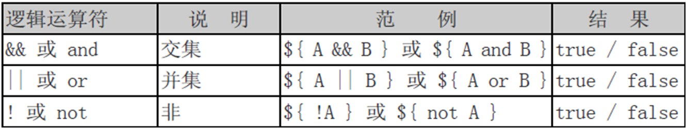
<%@ page contenttype="text/html;charset=UTF-8" language="java" %>
Title
<% request.setattribute("flag", true); request.setattribute("info", false); %>
${flag && info }
${flag || info }
${!info }
2.3.3.4 逻辑运算符注意事项
注意：逻辑运算中的异或”^”EL不支持。
2.3.3.5 比较运算
下图展示了EL支持的比较运算符，注意：英文和符号效果一致，推荐使用符号
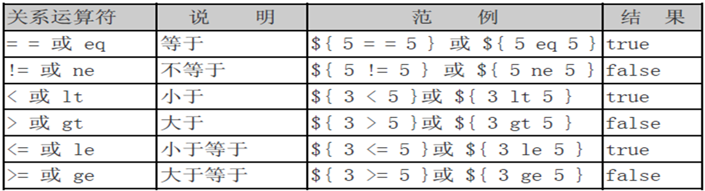
jsp代码演示：
<%@ page contenttype="text/html;charset=UTF-8" language="java" %>
Title
<% request.setattribute("x",3); request.setattribute("y",4); %>
${x < y }
${x <= y } ${x> y }
${x >= y }
${x == y }
${x != y }
2.3.3.6 比较运算注意事项
注意：使用比较运算符要保证数据是存在的并且是可比较的。
2.3.3.7 empty运算符和三元运算符
empty运算符是用来判断当前获取的数据是否为空或者当前获取的集合是否没有任何数据，三元运算符和java的三元运算符功能一致。
jsp：
<%--再当前jsp导入arraylist--%>
<%@ page import="java.util.ArrayList" %>
<%@ page contenttype="text/html;charset=UTF-8" language="java" %>
Title
<% request.setattribute("str",null); request.setattribute("list",new arraylist<>());
%>
${empty str}
${empty list}
${str == null? "数据为空":str}
2.3.3.8 empty运算符注意事项
注意：以上的empty运算符案例中，empty运算符可以和逻辑运算符组合使用。
例如：${not empty str}表示str不为空，返回true。
第3章 JSTL的核心标签库使用
3.1 jstl标签的基本概述
3.1.1 jstl的由来
接下来我们要学习一个新的知识点，那么首先，我们要知道他的由来：
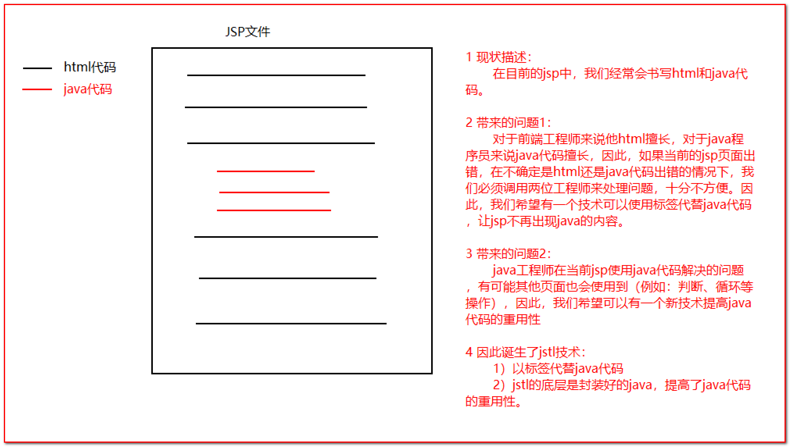
3.1.2 jstl的概述
从JSP 1.1规范开始JSP就支持使用自定义标签，使用自定义标签大大降低了JSP页面的复杂度，同时增强了代码的重用性，因此自定义标签在WEB应用中被广泛使用。许多WEB应用厂商都开发出了自己的一套标签库提供给用户使用，这导致出现了许多功能相同的标签，令网页制作者无所适从，不知道选择哪一家的好。为了解决这个问题，Apache Jakarta小组归纳汇总了那些网页设计人员经常遇到的问题，开发了一套用于解决这些常用问题的自定义标签库，这套标签库被SUN公司定义为标准标签库（The JavaServer Pages Standard Tag Library），简称JSTL。使用JSTL可以解决用户选用不同WEB厂商的自定义标签时的困惑，JSP规范同时也允许WEB容器厂商按JSTL标签库的标准提供自己的实现，以获取最佳性能。
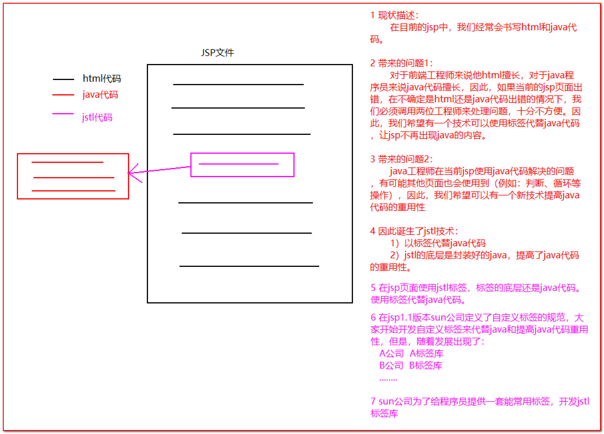
JSTL标签库提供5大功能（了解）：
- core：jstl的核心标签库。（目前还在使用）
- fmt：格式化（国际化）的标签（使用较少，对页面显示数据，格式化，现在都交给前端去做）
- functions：jstl中提供对字符串操作的函数库(不再使用，建议在数据显示在页面之前，在后台程序中，先格式化好字符串，然后直接显示，不再页面做处理，如果有前端，交给前端处理（javascript 解析json格式数据）
- sql：jstl提供的在jsp页面上书写sql，操作数据库，目前已经不再（不允许）使用（jsp开发模式二，这个开发模式不允许，在页面操作数据库）
- xml：jstl操作xml文件的。目前已经不再使用（页面传递数据，页面解析数据，使用json格式字符串代替xml）
因此我们需要知道的只有jstl的核心标签库。
3.1.2 jstl核心标签库列表
| 标签名称 | 作用 |
|---|---|
| \<c:if> | 用户java代码if(){}语句功能 重点掌握 |
| \<c:forEach> | 用户代替java代码for循环语句 重点掌握 |
| \<c:choose> | 用于指定多个条件选择的组合边界，它必须与<c:when>和<c:otherwise>标签一起使用 |
| \<c:out> | 通常用于输出一段文本内容到客户端浏览器 |
| \<c:set> | 用于设置各种Web域中的属性 |
| \<c:remove> | 用于删除各种Web域中的属性 |
| \<c:catch> | 用于捕获嵌套在标签体中的内容抛出的异常 |
| \<c:forTokens> | 用户迭代操作String字符 |
| \<c:param> | 给请求路径添加参数 |
| \<c:url> | 重写url，在请求路径添加sessionid |
| \<c:import> | 用于在JSP页面中导入一个URL地址指向的资源内容 |
| \<c:redirect> | 用于将当前的访问请求转发或重定向到其他资源 |
注意 : jsp本质上也是servlet,以前也会在jsp中处理业务逻辑,现在jsp的主要作用就是数据的展示,所以我们需要掌握在页面上遍历和判断的操作.
3.2 jstl标签的安装
我们知道了jstl可以帮助我们解决jsp页面出现java和提高java在页面的重用性问题，那么接下来，我们需要的是学习使用jstl。
3.2.1 导入jar包
javax.servlet.jsp.jstl.jar
jstl-impl.jar
3.2.2 使用taglib指令在jsp页面导入要使用的jstl标签库
<%@ taglib prefix="c" uri="http://java.sun.com/jsp/jstl/core" %>
在jsp书写”<c:”，看到如下提示，说明安装成功：

3.3 常用的jstl标签
jstl的核心标签内容有很多，现在目前还常用的标签只有if、foreach标签，接下来我们学习下。
3.3.1 if标签
3.3.1.1 if标签作用
起到java代码的判断的作用
3.3.1.2 if标签属性介绍
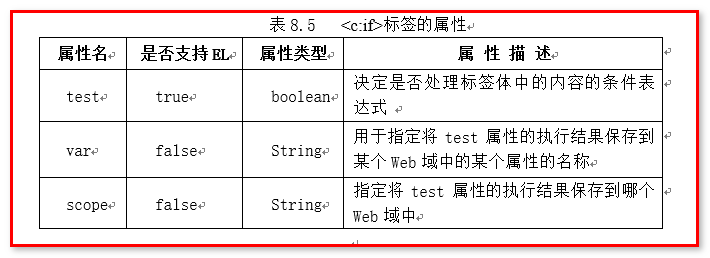
test：判断是否执行标签内的内容（true:执行标签中的内容，false:不执行）。
var：用来保存test属性的结果（使用var属性给他取个名字），这个结果可以保存到指定的容器中。
scope：指定保存数据的容器。
注：是否支持EL表达式指的是 是否可以在属性中书写EL表达式。
3.3.1.3 if标签注意事项
if标签，相当于java中的if(){}语句，而不是if(){}else{}语句
按照属性的数据类型传入数据，否则报错
3.3.1.4 if标签演示
<%@ page contenttype="text/html;charset=UTF-8" language="java" %>
<%@ taglib prefix="c" uri="http://java.sun.com/jsp/jstl/core" %>
Title
<%-- 获取test属性的值,将其以flag为属性名,test中计算的值为属性,放入session中 --%>
测试test标签
在页面上判断:3是否大于4,若页面上能显示"测试test标签",证明test的返回值为true;test中表达式的运算结果为:${session.flag}
3.3.2 foreach标签
3.3.2.1 foreach标签作用
起到java代码的for循环作用
3.3.2.2 foreach标签属性介绍
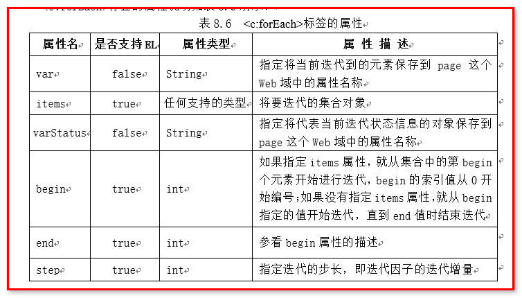
var：在不循环对象的时候，保存的是控制循环的变量；在循环对象的时候，保存的是被循环对象中的元素
items：指定要循环的对象
varStatus：保存了当前循环过程中的信息（循环的开始、结束、步长、次数等）
begin：设置循环的开始
end：设置循环的结束
step：设置步长——间隔几次循环，执行一次循环体中的内容
3.3.2.3 foreach标签演示
演示foreach循环标签的时候我们分开两种情况：不循环对象和循环对象。
我们先来看不循环对象的时候：
3.3.2.3.1 foreach不循环对象
begin、end、step 三属性的演示：设置循环开始、结束和步长。
<%@ page contenttype="text/html;charset=UTF-8" language="java" %>
<%@ taglib prefix="c" uri="http://java.sun.com/jsp/jstl/core" %>
Title
<%-- 演示foreach标签 --%>
<% for (int i="1;" <="5;" i++) { } %>
<%-- 1 2 3 4 5 12 34 45 123 1234 12345 begin="1" int i="1;" end="5" i<="5;" step="6" 步长，控制循环，间隔几次循环，执行一次循环体中的内容 m --%>
M
var属性演示：在不循环对象的时候，相当于将for循环中的循环变量i，每次都记录下来
<%@ page contenttype="text/html;charset=UTF-8" language="java" %>
<%@ taglib prefix="c" uri="http://java.sun.com/jsp/jstl/core" %>
Title
<%-- 演示foreach标签 --%>
<% for (int i="1;" <="5;" i++) { } %>
<%-- var 属性在不循环对象的时候，相当于将for循环中的循环变量i，每次都记录下来。 --%>
${info}
varStatus属性演示：保存了当前循环过程中的信息
<%@ page contenttype="text/html;charset=UTF-8" language="java" %>
<%@ taglib prefix="c" uri="http://java.sun.com/jsp/jstl/core" %>
Title
<%-- 演示foreach标签 --%>
<%-- 1 2 3 4 5 6 7 8 varstatus :保存了当前循环过程中的信息，信息包括以下内容： public java.lang.integer getbegin() 返回为标签设置的begin属性的值，如果没有设置begin属性则返回null int getcount() 返回当前已循环迭代的次数 java.lang.object getcurrent() 返回当前迭代到的元素对象 getend() 返回为标签设置的end属性的值，如果没有设置end属性则返回null getindex() 返回当前迭代的索引号 getstep() 返回为标签设置的step属性的值，如果没有设置step属性则返回null boolean isfirst() 返回当前是否是第一次迭代操作 islast() 返回当前是否是最后一次迭代操作 --%>
${sta.index}
${sta.count}
${sta.first}
${sta.last}
接下来我们在来看foreach如何循环对象
3.3.2.3.2 foreach循环对象（数组、list、map）
<%--import="java.util.*"导入java.util下的内容，给当前jsp使用--%>
<%@ page contenttype="text/html;charset=UTF-8" import="java.util.*" language="java" %>
<%@ taglib prefix="c" uri="http://java.sun.com/jsp/jstl/core" %>
Title
<%--演示循环数组--%>
<% int[] arr="{666,888,999,1024};" request.setattribute("arr", arr); %>
<%-- var在循环对象的时候，临时保存被循环到元素 --%>
${num }
<% list arraylist(); list.add("卡奴"); list.add("兰恩"); list.add("云娜"); request.setattribute("list", list); %>
${wind }
<% map hashmap(); map.put("ms1", "简历"); map.put("ms2", "身份证"); map.put("ms3", "学历证明"); map.put("ms4", "体检报告"); request.setattribute("map", map); %>
${entry.key }
${entry.value }
第4章 MVC模式和三层架构
4.1 MVC设计模式
MVC设计模式： Model-View-Controller简写。
MVC是软件工程中的一种软件架构模式，它是一种分离业务逻辑与显示界面的设计方法。它把软件系统分为三个基本部分：模型（Model）、视图（View）和控制器（Controller）。
- 控制器Controller：对请求进行处理，负责请求转发；
- 视图View：界面设计人员进行图形界面设计；
- 模型Model：编写程序应用的功能（实现算法等等）、数据库管理；
MVC可对程序的后期维护和扩展提供了方便，并且使程序某些部分的重用提供了方便。而且MVC也使程序简化，更加直观。
注意，MVC不是Java的特有的，几乎现在所有B/S结构的软件都采用了MVC设计模式。
4.2 JSP开发模式
当SUN公司推出JSP后，同时也提供相应的开发模式，JavaWeb经历了JSP Model1 第一代，JSPModel2第二代，JSP Model 3 三个时期。
###4.2.1.JSP Model1 第一代
JSP Model1是JavaWeb早期的模型，它适合小型Web项目，开发成本低！Model1第一代时期，服务器端只有JSP页面，所有的操作都在JSP页面中，连访问数据库的API也在JSP页面中完成。也就是说，所有的东西都在一起，对后期的维护和扩展极为不利。
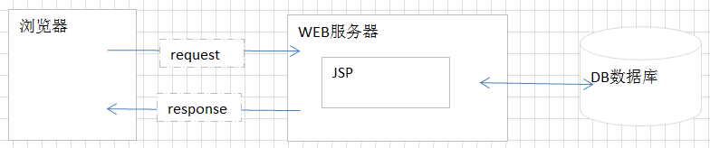
4.2.2 JSP Model1 第二代
JSP Model1第二代有所改进，把业务逻辑的内容放到了JavaBean中，而JSP页面负责显示以及请求调度的工作。虽然第二代比第一代好了些，但还让JSP做了过多的工作，JSP中把视图工作和请求调度（控制器）的工作耦合在一起了。
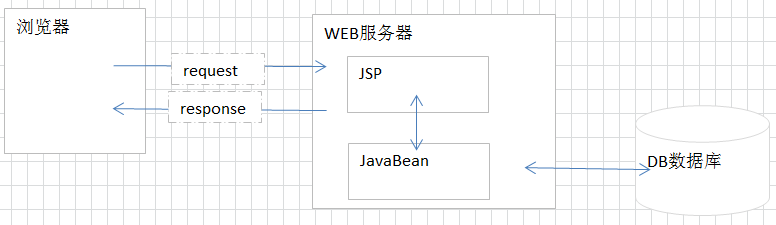
4.2.3 JSP Model 2
Model2使用到的技术有：Servlet、JSP、JavaBean。Model2 是MVC设计模式在Java语言的具体体现。
JSP：视图层，用来与用户打交道。负责接收用来的数据，以及显示数据给用户；
Servlet：控制层，负责找到合适的模型对象来处理业务逻辑，转发到合适的视图；
JavaBean：模型层，完成具体的业务工作，例如：转账等。
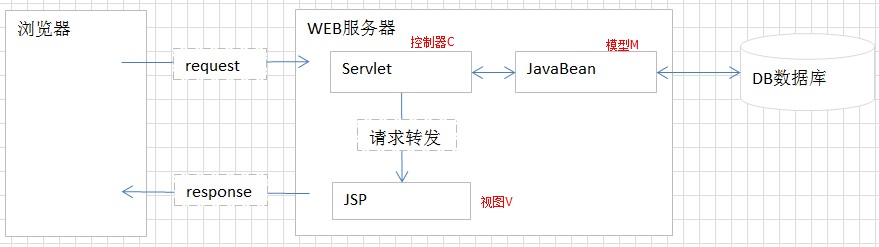
4.3 三层架构
JSP模式是理论基础，但实际开发中，我们常将服务器端程序，根据逻辑进行分层。一般比较常见的是分三层，我们称为：经典三层体系架构。三层分别是：表示层、业务逻辑层、数据访问层。
- 表示层：又称为 web层，与浏览器进行数据交互的。
- 业务逻辑层：又称为service层，专门用于处理业务数据的。
- 数据访问层：又称为dao层，与数据库进行数据交换的。将数据库的一条记录与JavaBean进行对应。
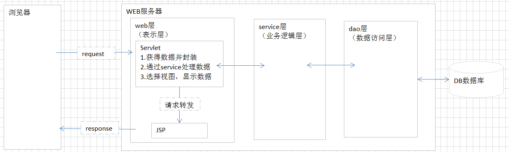
在我们开发的时候一般是通过包结果来体现三层架构的,三层架构包命名一般如下：
简单版
cn.itcast 公司域名倒写
cn.itcast.dao dao层
cn.itcast.service service层
cn.itcast.web.servlet web层
cn.itcast.domain JavaBean
cn.itcast.utils 工具
完整版
cn.itcast 公司域名倒写
cn.itcast.xxx 项目名称
cn.itcast.xxx.yyy 子模块
cn.itcast.xxx.yyy.dao 子模块dao层接口
cn.itcast.xxx.yyy.dao.impl 子模块dao层实现类
cn.itcast.xxx.yyy.service 子模块service层接口
cn.itcast.xxx.yyy.service.impl 子模块service层实现类
cn.itcast.xxx.yyy.domain 子模块JavaBean (子模块yyy可省略)
cn.itcast.xxx.yyy.web.servlet 子模块web层，servlet
cn.itcast.xxx.yyy.web.filter 子模块web层，filter
cn.itcast.xxx.utils 工具
cn.itcast.xxx.exception 自定义异常
cn.itcast.xxx.constant 常量
第5章 使用三层架构和MCV模式完成用户显示列表案例
5.1 案例需求
使用三层架构和MVC模式开发代码，完成用户显示列表功能。
5.2 案例效果
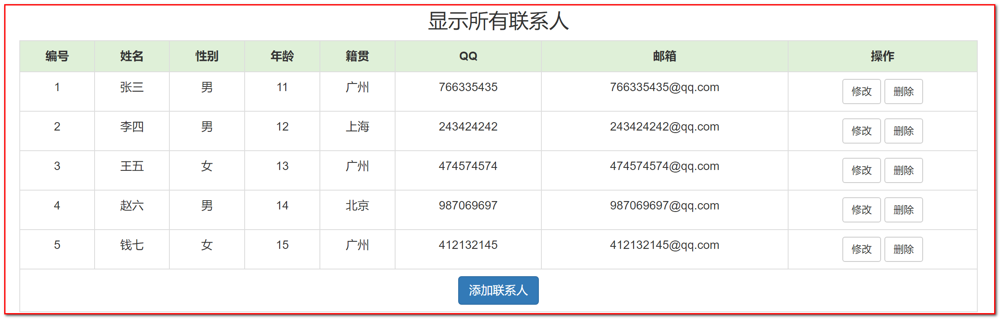
5.3 案例分析
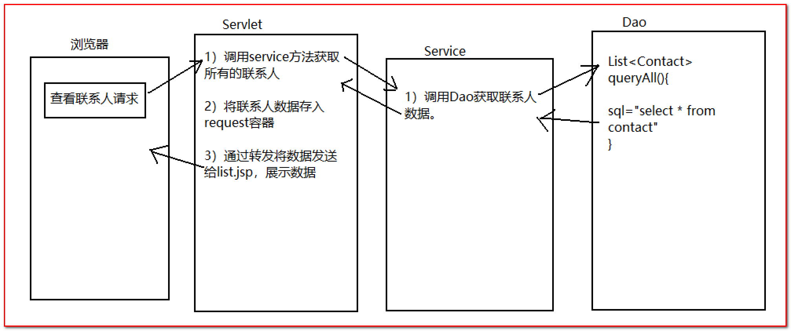
5.4 实现步骤
5.4.1 导入页面
<%@ page contenttype="text/html;charset=UTF-8" language="java" %>
Bootstrap模板
5.4.2 导入页面相关的资源文件
复制今天资料文件夹/案例原型下的三个文件夹到web根路径：
css
fonts
js
5.4.3 导入jar包、配置文件、实体类和工具类
导入jar包
配置文件:druid-config.properties
driverClass:com.mysql.jdbc.Driver jdbcUrl:jdbc:mysql:///day05 username:root password:root
实体类
package cn.itcast.domain; public class Contact { private int id; private String name; private String sex; private int age; private String address; private String qq; private String email; public int getId() { return id; } public void setId(int id) { this.id = id; } public String getName() { return name; } public void setName(String name) { this.name = name; } public String getSex() { return sex; } public void setSex(String sex) { this.sex = sex; } public int getAge() { return age; } public void setAge(int age) { this.age = age; } public String getAddress() { return address; } public void setAddress(String address) { this.address = address; } public String getQq() { return qq; } public void setQq(String qq) { this.qq = qq; } public String getEmail() { return email; } public void setEmail(String email) { this.email = email; } @Override public String toString() { return "Contact{" + "id=" + id + ", name='" + name + '\'' + ", sex='" + sex + '\'' + ", age=" + age + ", address='" + address + '\'' + ", qq='" + qq + '\'' + ", email='" + email + '\'' + '}'; } }
工具类
package cn.itcast.utils; import com.alibaba.druid.pool.DruidDataSource; import javax.sql.DataSource; import java.sql.Connection; import java.sql.SQLException; import java.util.ResourceBundle; public class JDBCUtils { private static DruidDataSource dc = new DruidDataSource(); static { ResourceBundle bundle = ResourceBundle.getBundle("druid-config"); String driverClass = bundle.getString("driverClass"); String jdbcUrl = bundle.getString("jdbcUrl"); String username = bundle.getString("username"); String password = bundle.getString("password"); dc.setDriverClassName(driverClass); dc.setUrl(jdbcUrl); dc.setUsername(username); dc.setPassword(password); } public static Connection getConnection() throws SQLException { return dc.getConnection(); } public static DataSource getDataSource(){ return dc; } }
5.4.4 编写servlet代码
package cn.itcast.web;
import cn.itcast.domain.Contact;
import cn.itcast.service.ContactService;
import javax.servlet.ServletException;
import javax.servlet.annotation.WebServlet;
import javax.servlet.http.HttpServlet;
import javax.servlet.http.HttpServletRequest;
import javax.servlet.http.HttpServletResponse;
import java.io.IOException;
import java.util.List;
//urlPatterns = "/queryAll"
public class QueryAllServlet extends HttpServlet {
protected void doPost(HttpServletRequest request, HttpServletResponse response) throws ServletException, IOException {
doGet(request,response);
}
protected void doGet(HttpServletRequest request, HttpServletResponse response) throws ServletException, IOException {
//获取联系人数据
ContactService contactService = new ContactService();
List<Contact> list = contactService.queryAll();
//将联系人数据转发到页面展示
request.setAttribute("list" ,list);
request.getRequestDispatcher("/list.jsp").forward(request,response);
}
}
5.4.5 编写service代码
package cn.itcast.service;
import cn.itcast.dao.ContactDao;
import cn.itcast.domain.Contact;
import java.util.List;
public class ContactService {
private ContactDao contactDao = new ContactDao();
public List<Contact> queryAll() {
return contactDao.queryAll();
}
}
5.4.6 编写dao代码
package cn.itcast.dao;
import cn.itcast.domain.Contact;
import cn.itcast.utils.JDBCUtils;
import org.springframework.jdbc.core.JdbcTemplate;
import org.springframework.jdbc.core.RowMapper;
import java.sql.ResultSet;
import java.sql.SQLException;
import java.util.List;
public class ContactDao {
private JdbcTemplate template = new JdbcTemplate(JDBCUtils.getDataSource());
public List<Contact> queryAll() {
String sql = "select * from contact";
List<Contact> query = template.query(sql, new RowMapper<Contact>() {
@Override
public Contact mapRow(ResultSet rs, int i) throws SQLException {
Contact contact = new Contact();
contact.setId(rs.getInt("id"));
contact.setName(rs.getString("name"));
contact.setSex(rs.getString("sex"));
contact.setAge(rs.getInt("age"));
contact.setAddress(rs.getString("address"));
contact.setQq(rs.getString("qq"));
contact.setEmail(rs.getString("email"));
System.out.println(contact);
return contact;
}
});
return query;
}
}